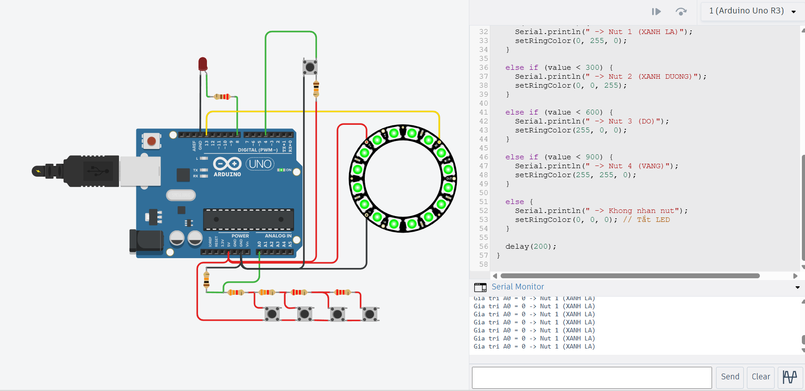

Bài 4. Giao tiếp Serial và Debug chương trình
Bài học giúp học viên hiểu cách Arduino giao tiếp với máy tính, hiển thị dữ liệu và debug chương trình thông qua Serial Monitor.
1. Mục tiêu bài học
- Hiểu giao tiếp Serial giữa Arduino và máy tính.
- Biết mở và sử dụng Serial Monitor.
- Biết gửi dữ liệu từ Arduino lên máy tính.
- Biết nhận dữ liệu từ máy tính gửi xuống Arduino.
- Biết dùng Serial để debug nút nhấn và cảm biến.
2. Giao tiếp Serial là gì?
Serial là phương thức giao tiếp giữa Arduino và máy tính thông qua cổng USB. Arduino có thể gửi dữ liệu lên máy tính và cũng có thể nhận dữ liệu do người dùng gửi xuống.

Khi Arduino sử dụng các lệnh như Serial.print() hoặc
Serial.println(), dữ liệu sẽ được gửi lên máy tính.

Serial Monitor là cửa sổ dùng để quan sát dữ liệu Arduino gửi lên, đồng thời có thể gửi lệnh từ máy tính xuống Arduino.

3. Khởi tạo Serial
Trước khi gửi hoặc nhận dữ liệu qua Serial, cần khởi tạo tốc độ truyền dữ liệu trong hàm setup().
Serial.begin(9600); // Khởi tạo Serial với tốc độ 9600 bps4. Gửi dữ liệu từ Arduino lên máy tính

https://www.tinkercad.com/things/1pb0HgWOLKE-button
4.1. Lệnh cơ bản
Serial.print("Hello"); // In dữ liệu nhưng không xuống dòng
Serial.println("Hello"); // In dữ liệu và xuống dòng4.2. Code ví dụ
void setup() {
Serial.begin(9600); // Khởi tạo Serial
}
void loop() {
Serial.println("Robot dang hoat dong"); // Gửi chuỗi lên Serial Monitor
delay(1000); // Gửi lại sau mỗi 1 giây
}5. Debug bằng Serial
Debug là quá trình kiểm tra chương trình để biết dữ liệu đang đúng hay sai. Với robot, Serial thường dùng để xem giá trị nút nhấn, cảm biến analog, cảm biến line, siêu âm...
5.1. Debug nút nhấn Digital
#define BUTTON_PIN 4 // Nút nhấn nối với chân D4
void setup() {
pinMode(BUTTON_PIN, INPUT_PULLUP); // Dùng điện trở kéo lên trong
Serial.begin(9600); // Mở Serial Monitor
}
void loop() {
int state = digitalRead(BUTTON_PIN); // Đọc trạng thái nút
Serial.print("Trang thai nut = ");
Serial.println(state); // Không nhấn = HIGH, nhấn = LOW
delay(200);
}5.2. Debug giá trị Analog A0
void setup() {
Serial.begin(9600); // Mở Serial Monitor
}
void loop() {
int value = analogRead(A0); // Đọc giá trị analog tại chân A0
Serial.print("Gia tri A0 = ");
Serial.println(value); // Giá trị nằm trong khoảng 0 đến 1023
delay(200);
}6. Nhận dữ liệu từ máy tính
Ngoài việc gửi dữ liệu lên máy tính, Arduino cũng có thể nhận ký tự do người dùng nhập từ Serial Monitor.
6.1. Lệnh cơ bản
Serial.available(); // Kiểm tra có dữ liệu gửi đến hay không
Serial.read(); // Đọc một ký tự từ Serial Monitor6.2. Code ví dụ điều khiển bật tắt LED bằng Serial
#define LED_PIN 8 // LED thường nối với chân D8
void setup() {
pinMode(LED_PIN, OUTPUT); // Đặt LED là OUTPUT
Serial.begin(9600); // Mở Serial Monitor
Serial.println("Nhap 1 de bat LED");
Serial.println("Nhap 0 de tat LED");
}
void loop() {
if (Serial.available() > 0) { // Nếu có dữ liệu gửi từ máy tính
char c = Serial.read(); // Đọc một ký tự
if (c == '1') {
digitalWrite(LED_PIN, HIGH); // Bật LED
Serial.println("LED ON");
}
if (c == '0') {
digitalWrite(LED_PIN, LOW); // Tắt LED
Serial.println("LED OFF");
}
}
}6.3. Code ví dụ hiển thị ngưỡng nút và điều khiển LED Ring
#include <Adafruit_NeoPixel.h>
#define BUTTONS_PIN A0 // Bốn nút dùng chung chân A0
#define LED_PIN 13 // LED Ring nối chân D13
#define NUM_LEDS 16 // LED Ring có 16 LED
Adafruit_NeoPixel ring(NUM_LEDS, LED_PIN, NEO_GRB + NEO_KHZ800);
void setRingColor(int r, int g, int b) {
for (int i = 0; i < NUM_LEDS; i++) {
ring.setPixelColor(i, ring.Color(r, g, b)); // Gán màu cho LED thứ i
}
ring.show(); // Cập nhật LED Ring
}
void setup() {
Serial.begin(9600); // Mở Serial Monitor
ring.begin(); // Khởi tạo LED Ring
ring.show(); // Tắt LED ban đầu
}
void loop() {
int value = analogRead(BUTTONS_PIN); // Đọc giá trị từ A0
Serial.print("Gia tri A0 = ");
Serial.print(value);
// ===== XÁC ĐỊNH NÚT =====
if (value < 100) {
Serial.println(" -> Nut 1 (XANH LA)");
setRingColor(0, 255, 0);
}
else if (value < 300) {
Serial.println(" -> Nut 2 (XANH DUONG)");
setRingColor(0, 0, 255);
}
else if (value < 600) {
Serial.println(" -> Nut 3 (DO)");
setRingColor(255, 0, 0);
}
else if (value < 900) {
Serial.println(" -> Nut 4 (VANG)");
setRingColor(255, 255, 0);
}
else {
Serial.println(" -> Khong nhan nut");
setRingColor(0, 0, 0); // Tắt LED
}
delay(200);
}
7. Ứng dụng Serial trong robot
- Kiểm tra trạng thái nút nhấn.
- In giá trị cảm biến analog.
- Debug cảm biến dò line.
- Hiển thị khoảng cách đo được từ cảm biến siêu âm.
- Kiểm tra trạng thái chương trình: READY, RUNNING, ERROR.
- Gửi lệnh đơn giản từ máy tính để điều khiển robot.
8. Bài tập thực hành
- Viết chương trình in dòng chữ “Hello Robot” mỗi 1 giây.
- In trạng thái nút nhấn D4 ra Serial Monitor.
- In giá trị analog của A0 ra Serial Monitor.
- Dùng Serial để bật/tắt LED D8 bằng ký tự 1 và 0.
- Viết chương trình nhập ký tự R, G, B để đổi màu LED RGB.
9. Lỗi thường gặp
Serial.available() trước khi dùng Serial.read().
delay() khi debug.